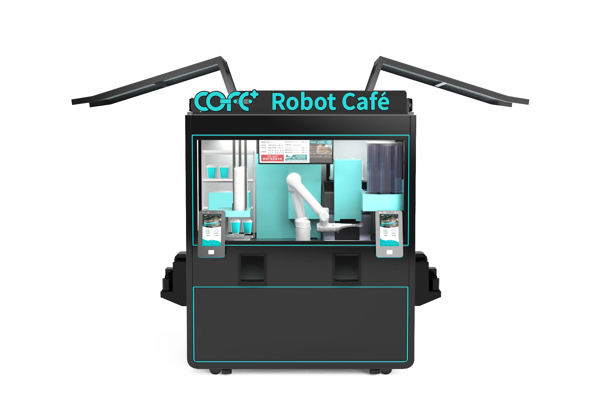
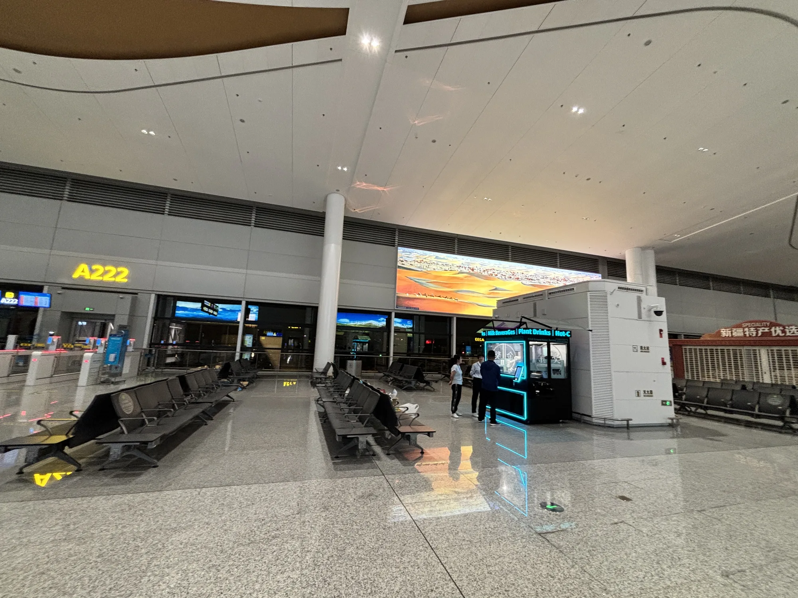
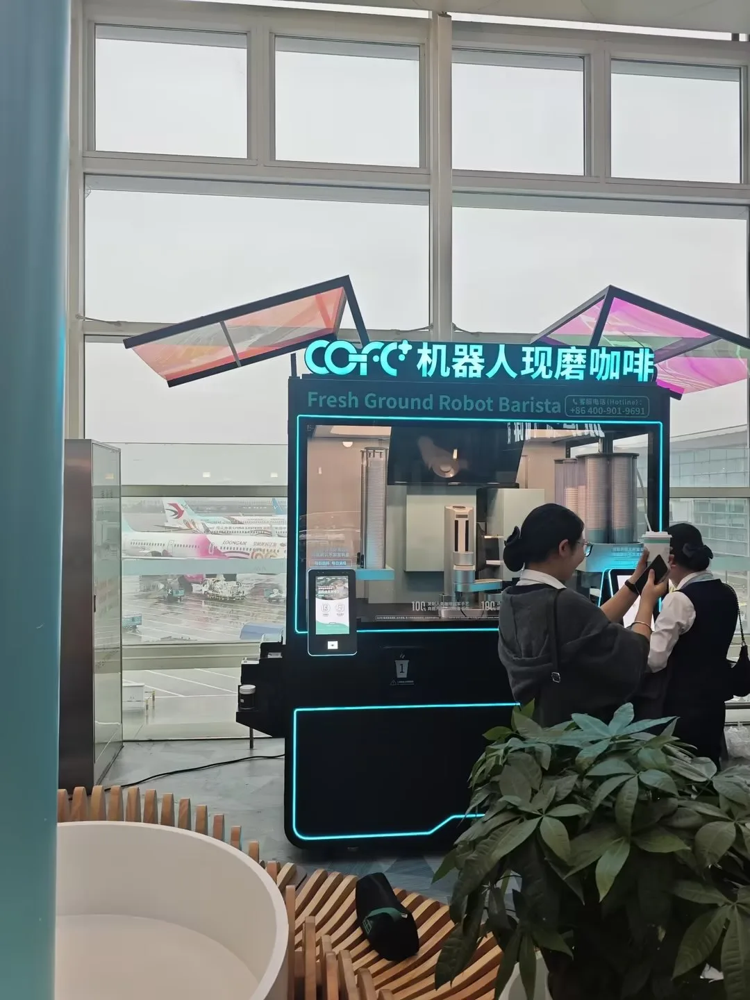
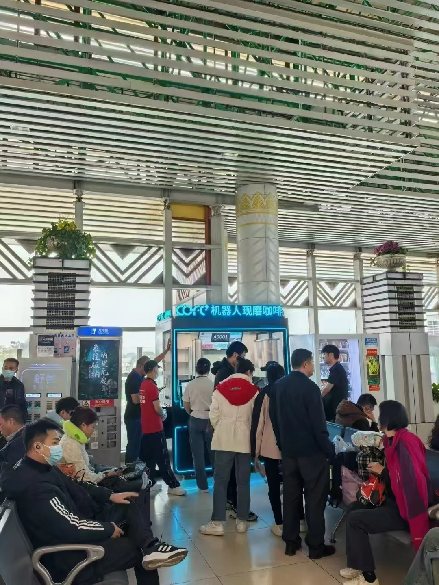
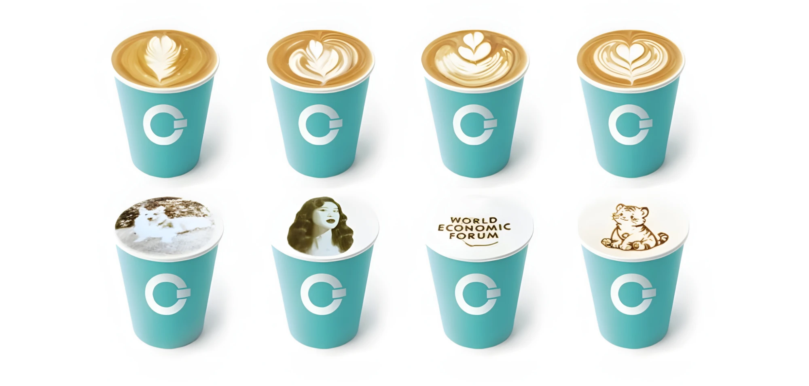

Why airports are the perfect location for robot coffee kiosks
Round-the-clock demand, scarce floor space, and hard-to-fill overnight shifts — the three conditions that strain a traditional café are exactly the conditions a COFE+ robot barista is built for.
A compact, self-operating café that needs no barista — and no back room.
The COFE+ kiosk takes the order, grinds fresh beans for every cup, brews espresso, latte, tea and chocolate, finishes with robotic-arm latte art, and serves the drink — start to finish, with no human help.

Airports combine the three things a traditional café struggles with.
The demand never stops
Flights depart and arrive at every hour, so a coffee point that closes at night leaves travelers unserved. A COFE+ kiosk runs 24/7 unmanned.
Space is at a premium
Airport retail rent is among the highest anywhere. The kiosk occupies under 2.35 m²; bar and counter formats need only ~2 m².
Staffing is hard and costly
Overnight barista shifts are difficult to fill and expensive to run. A robot kiosk removes the labor bottleneck entirely.
per fresh cup
In a May 2026 human-vs-machine competition, the 7th-generation COFE+ averaged 54 seconds per cup against human baristas' 72 — the first time a coffee robot comprehensively beat professionals on speed and accuracy.
Robot coffee kiosks already serving travelers in real terminals.
COFE+ is deployed in more than 21 international airports across five continents. Three deployments show how the model performs where it matters most.

In service on five continents, from Denver to Kuala Lumpur.
Also in service at Kuala Lumpur International, Brussels Airport, Hangzhou Xiaoshan, and Kunming Changshui, among others.
How the model performs in real terminals.
Denver International
The 4th-busiest U.S. airport, handling 60M+ annual passengers. Its COFE+ kiosk serves travelers 24/7 — including the overnight hours when staffed shops are closed.
Chișinău International
A COFE+ kiosk averages 200+ cups per day, and the operator reached full return on investment within four months of opening.
Shanghai Hongqiao
A major gateway hub with 40M+ annual passengers, where a COFE+ kiosk was deployed in March 2025 and runs 24/7 unattended.
Gate-side by day, rush after rush.


No — automation is what makes quality possible at 2 AM.
The kiosk grinds fresh beans for every cup and uses smart algorithms that replicate champion-barista recipes — so the 500th cup of the day tastes like the first.
- 50+ beverages with 47 topping options — thousands of unique combinations.
- A robotic arm pours latte art, and can 3D-print an image or text onto the foam.

Food-safety certified worldwide — at a price that surprises.
World's first coffee robot certified simultaneously by:
With 50+ certifications from 18+ developed countries — the kind of food-safety credentials airport operators require before a tenant opens.
≈ $1.40 USD, at high quality
Yahoo Finance reported in 2024–2026 that a COFE+ cup could be brewed for as low as roughly 10 RMB — high quality at a fraction of specialty-shop cost.
The same job, at a fraction of the cost.
| Factor | COFE+ robot coffee kiosk | Traditional airport café |
|---|---|---|
| Hours | 24/7 unmanned | Limited by staff shifts |
| Footprint | Under 2.35 m² | 30–100 m² |
| Staff per shift | 0 — under 30 min daily maintenance | 2–5 |
| Speed per cup | ~54 seconds | ~72 seconds (barista, May 2026 test) |
| Labor / operating cost | Up to 90% lower | Baseline |
| Daily output | Up to 1,000 cups | Varies with staffing |
A coffee point that keeps serving through the night — without on-site staff.
The AIoT "Smart Store Brain"
Tracks sales and inventory in real time, runs automated cleaning cycles, and sends predictive maintenance alerts to a smartphone — so reliability is monitored, not assumed.
What airport operators ask first.
How long does it take to make a coffee?
About 54 seconds (50–55s avg). In a May 2026 competition it averaged 54s per cup vs. human baristas' 72s.
How much airport space does it need?
Under 2.35 m²; bar and counter formats need ~2 m² — far less than the 30–100 m² a specialty shop requires.
Can it run overnight without staff?
Yes — 24/7 unmanned with under 30 min of daily maintenance, exactly how Denver International serves closed hours.
Which airports already have COFE+?
More than 21 international airports, including Denver, Shanghai Hongqiao, Chișinău, Kuala Lumpur and Brussels.
Is it profitable for an operator?
It can be quickly: Chișinău averages 200+ cups/day and reached full ROI within 4 months.
How many drinks can it make?
Up to 1,000 cups/day, 5 at once — 50+ beverages with 47 toppings for thousands of combinations.
A fresh cup in ~54 seconds, 24/7, in under 2.35 m² — the terminal barista that never clocks out.
Deployed in 21+ international airports on five continents. Where demand never stops and space is scarce, the robot coffee kiosk isn't a novelty — it's the fit.